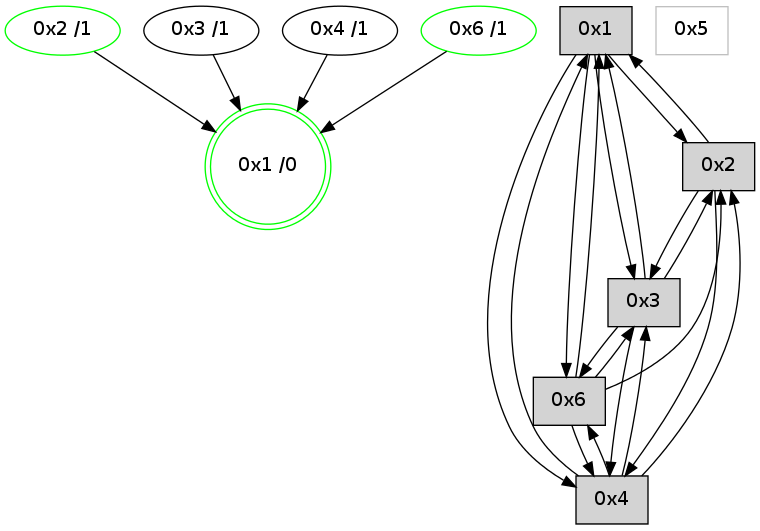

>> << IDX [start] -100 -25 -5 +0 +5 +25 [1205.28685498]
 Previous packets
----------------------------------------------------------------------
1200.264321 beacon01(adaf) #0 coord=01,02,05,03,04,06 cycle=944.0ms assoc
-- color-indic=0 64 93 82
1200.274282 beacon02(adaf) #0 coord=01,02,05,03,04,06 cycle=944.0ms assoc 64 c2 7d
1200.284282 beacon05(adaf) #0 coord=01,02,05,03,04,06 cycle=944.0ms assoc 64 64 57
1200.294283 beacon03(adaf) #0 coord=01,02,05,03,04,06 cycle=944.0ms assoc 64 f8 73
1200.304283 beacon04(adaf) #0 coord=01,02,05,03,04,06 cycle=944.0ms assoc 64 5e 59
1200.314283 beacon06(adaf) #0 coord=01,02,05,03,04,06 cycle=944.0ms assoc 64 2a 45
1200.326001 [Hello(3): seq=972 sym=6,2,1,4 color=2 sysInfo=hasWarning,MaxColorIndicationCalled,ColoringModeIndicationCalled,MaxColorResponseCalled stat=6:9,0,3,0/2:1,0,1,0/1:1,15,12,1/4:8,10,3,1]
1200.328428 [Hello(1): seq=875 sym=2,4,6,3 color=0 sysInfo=hasWarning,MaxColorIndicationCalled,MaxColorResponseCalled,MaxColorRequestCalled,ColoringModeRequestCalled stat=2:4,3,6,0/4:3,0,0,0/6:5,2,11,0/3:2,0,3,0]
1200.331627 [Hello(4): seq=972 sym=2,1,3,6 sysInfo=hasWarning stat=2:2,0,1,0/1:1,11,13,0/3:1,0,5,0/6:8,0,4,0]
1200.334754 [STC(4)->1 #0.214 new-neigh,tree-change,inconsistent-stability,to-color d=1]
----------------------------------------------------------------------
1201.268828 beacon01(adaf) #0 coord=01,02,05,03,04,06 cycle=944.0ms assoc
-- color-indic=0 64 57 ed
1201.278790 beacon02(adaf) #0 coord=01,02,05,03,04,06 cycle=944.0ms assoc 64 06 12
1201.288790 beacon05(adaf) #0 coord=01,02,05,03,04,06 cycle=944.0ms assoc 64 a0 38
1201.298790 beacon03(adaf) #0 coord=01,02,05,03,04,06 cycle=944.0ms assoc 64 3c 1c
1201.308792 beacon04(adaf) #0 coord=01,02,05,03,04,06 cycle=944.0ms assoc 64 9a 36
1201.318790 beacon06(adaf) #0 coord=01,02,05,03,04,06 cycle=944.0ms assoc 64 ee 2a
1201.330495 [Hello(2): seq=1460 sym=3,1,4 color=13 sysInfo=hasWarning,MaxColorIndicationCalled,ColoringModeIndicationCalled,MaxColorResponseCalled stat=3:11,0,2,0/1:6,7,14,0/4:6,0,2,0]
----------------------------------------------------------------------
1202.273335 beacon01(adaf) #0 coord=01,02,05,03,04,06 cycle=944.0ms assoc
-- color-indic=0 64 72 d0
1202.283297 beacon02(adaf) #0 coord=01,02,05,03,04,06 cycle=944.0ms assoc 64 23 2f
1202.293296 beacon05(adaf) #0 coord=01,02,05,03,04,06 cycle=944.0ms assoc 64 85 05
1202.303298 beacon03(adaf) #0 coord=01,02,05,03,04,06 cycle=944.0ms assoc 64 19 21
1202.313296 beacon04(adaf) #0 coord=01,02,05,03,04,06 cycle=944.0ms assoc 64 bf 0b
1202.323297 beacon06(adaf) #0 coord=01,02,05,03,04,06 cycle=944.0ms assoc 64 cb 17
1202.334452 [Hello(1): seq=876 sym=2,4,6,3 color=0 sysInfo=hasWarning,MaxColorIndicationCalled,MaxColorResponseCalled,MaxColorRequestCalled,ColoringModeRequestCalled stat=2:5,3,6,0/4:4,0,1,0/6:5,2,11,0/3:2,0,3,0]
1202.338673 [Hello(4): seq=973 sym=2,1,3,6 sysInfo=hasWarning stat=2:3,0,1,0/1:1,11,13,0/3:1,0,5,0/6:8,0,4,0]
----------------------------------------------------------------------
1203.277843 beacon01(adaf) #0 coord=01,02,05,03,04,06 cycle=944.0ms assoc
-- color-indic=0 64 b6 bf
1203.287803 beacon02(adaf) #0 coord=01,02,05,03,04,06 cycle=944.0ms assoc 64 e7 40
1203.297804 beacon05(adaf) #0 coord=01,02,05,03,04,06 cycle=944.0ms assoc 64 41 6a
1203.307804 beacon03(adaf) #0 coord=01,02,05,03,04,06 cycle=944.0ms assoc 64 dd 4e
1203.317806 beacon04(adaf) #0 coord=01,02,05,03,04,06 cycle=944.0ms assoc 64 7b 64
1203.327804 beacon06(adaf) #0 coord=01,02,05,03,04,06 cycle=944.0ms assoc 64 0f 78
1203.338792 [STC(1) #0.215 new-neigh,tree-change,inconsistent-stability,stable,to-color d=0]
1203.343169 [Hello(2): seq=1461 sym=3,1,4 color=13 sysInfo=hasWarning,MaxColorIndicationCalled,ColoringModeIndicationCalled,MaxColorResponseCalled stat=3:12,0,2,0/1:7,7,14,0/4:6,0,2,0]
----------------------------------------------------------------------
1204.282347 beacon01(adaf) #0 coord=01,02,05,03,04,06 cycle=944.0ms assoc
-- color-indic=0 64 fa 0f
1204.292308 beacon02(adaf) #0 coord=01,02,05,03,04,06 cycle=944.0ms assoc 64 ab f0
1204.302308 beacon05(adaf) #0 coord=01,02,05,03,04,06 cycle=944.0ms assoc 64 0d da
1204.312309 beacon03(adaf) #0 coord=01,02,05,03,04,06 cycle=944.0ms assoc 64 91 fe
1204.332310 beacon06(adaf) #0 coord=01,02,05,03,04,06 cycle=944.0ms assoc 64 43 c8
1204.344236 [Hello(3): seq=974 sym=6,2,1,4 color=2 sysInfo=hasWarning,MaxColorIndicationCalled,ColoringModeIndicationCalled,MaxColorResponseCalled stat=6:11,0,3,0/2:1,0,1,0/1:2,15,13,1/4:9,10,4,1]
1204.347370 [STC(3)->1 #0.215 new-neigh,tree-change,inconsistent-stability,to-color d=1]
1204.349354 [Hello(1): seq=877 sym=2,4,6,3 color=0 sysInfo=hasWarning,MaxColorIndicationCalled,MaxColorResponseCalled,MaxColorRequestCalled,ColoringModeRequestCalled stat=2:5,3,6,0/4:4,0,1,0/6:5,2,11,0/3:3,0,3,0]